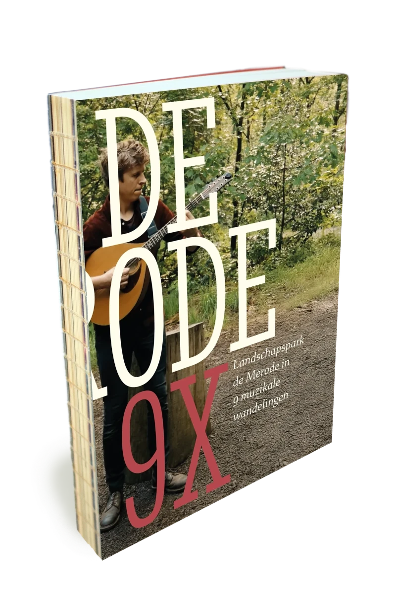
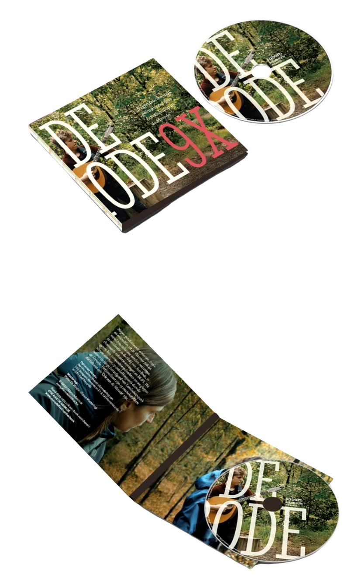

Boek en cd
Ode aan de Merode
9 × Landschapspark de Merode in woord, muziek, beeld en wandelingen
Negen getalenteerde artiesten, duo’s en ensembles uit de Vlaamse folk- en wereldmuziekscene werden ontvangen in residentie in de Abdij van Averbode, in charmante vakantiewoningen en gastvrije B&B’s. Hun ontdekkingstocht langs de natuur en het erfgoed van Landschapspark de Merode inspireerde hen tot vijftien prachtige muziekstukken, telkens een “Ode aan de Merode”. De verhalen en de wandelingen vind je in het boek, de muziek op de cd.

Artiesten in residentie
Een sterke selectie folk- en wereldmuziekartiesten zakte af naar het Merodegebied, verbleef er in residentie en werkte aan nieuwe muziek. Zo ontstonden ‘de Merodewals’ van GFVP, ‘de Merode’ van Sara Salvérius, ‘Mer(en)ode’ van Laura Cortese en twaalf andere nummers, geïnspireerd op hun verblijf in het gebied. Van het geheel is er een afspeellijst en een cd.
Wandelingen
In elk van de Merodegemeenten werd een wandeling uitgewerkt die natuur, erfgoed, ondernemerschap, stilte, rust en ruimte laat ervaren: in Hertberg, Averbode Bos & Heide, Langdorp, Gerhagen, Eindhout, Westmeerbeek, Dassenaarde en Westerlo, met in Zammel een vooruitblik op het meerdaagse wandelpad.
Gesprekken over het landschapspark en folkmuziek
Met de artiesten en met Merodemakers, zoals erfgoedhouders, ondernemers, domeinwachters en therapeuten, gingen we in gesprek over de muziek en over wat Landschapspark de Merode uniek maakt. Die gesprekken kregen een neerslag in het boek.
Waar koop je het boek?
Bij de Merodelabelhouders, de toeristische diensten in het Merodegebied en in de Standaard Boekhandels in heel Vlaanderen. In Leuven vind je het boek bij Plato, Barboek, Boekarest, FNAC, de Sax en Cyaan & Co. Of bestel boek en cd online, dan sturen we ze op.
Merodelabelhouders · Toeristische dienstenKijk en luister
Beelden

Ode aan de Merode is een samenwerking van Landschapspark de Merode en Merodefestival, met financiële steun van de Vlaamse overheid (kunsten & erfgoed) en Sabam for Culture.